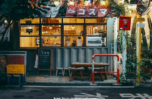

Kopi V60 adalah salah satu metode penyeduhan kopi manual yang populer. Dinamakan demikian karena menggunakan dripper berbentuk kerucut (V60) yang memiliki alur spiral di bagian dalamnya. Alur spiral ini berfungsi untuk memperlambat aliran air sehingga ekstraksi rasa kopi menjadi lebih optimal.
Kafe ini dapat digambarkan sebagai tempat nyaman yang menyediakan kopi berkualitas dengan metode penyeduhan manual seperti V60 pour-over. Interiornya yang hangat dan suasana khas Jepang menjadikannya tempat ideal untuk menikmati secangkir kopi sambil bersantai.

1-2-3 Sakuragaoka, Shibuya, Tokyo 150-0031, Jepang.